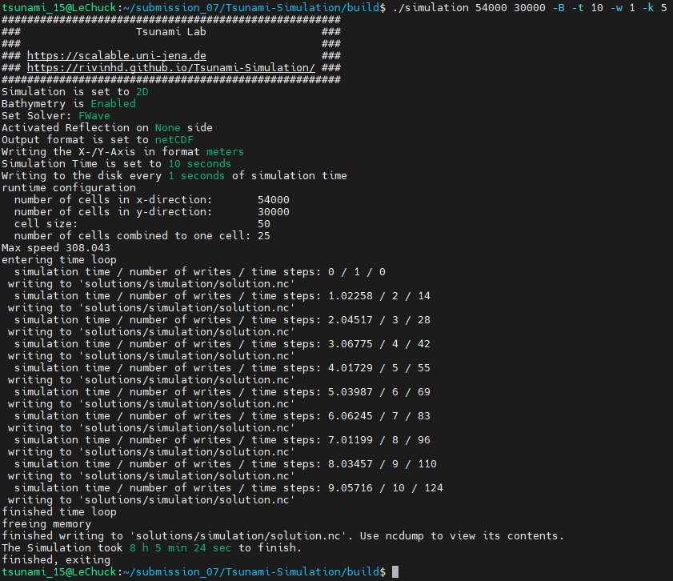

7. Checkpointing and Coarse Output
7.1. Checkpointing
1. Extended netCDF writer
The writer for a checkpoint must be extended by the following variables:
commandLine, writeCount and hMax.
The variable commandLine stores the user input that is to be reapplied from a checkpoint when the simulation is started.
writeCount stores the number of writes made to the solution file.
hMax stores the hMax value that was calculated at the start of the simulation. This is needed to calculate the same time steps and the same time scaling.
First, the constructor must be changed to implement the functionality for the checkpoint. This involves defining further variables and setting data for all precalculated variables:
/// File: NetCdf.cpp
/// Header: NetCdf.h
/// Test: NetCdf.test.cpp
tsunami_lab::io::NetCdf::NetCdf( std::string filePath,
t_idx l_nx,
t_idx l_ny,
t_idx l_k,
t_real l_scaleX,
t_real l_scaleY,
t_idx l_stride,
const t_real* bathymetry,
bool useSpherical,
bool useMomenta,
const char* commandLine,
t_real hMax )
: isReadMode( false ), isCheckpoint( commandLine[0] != '\0' ), commandLine( commandLine )
{
[...]
if( isCheckpoint )
{
l_err = nc_def_var( m_ncId,
"commandLine",
NC_CHAR,
1,
&strDimID,
&commandLineID );
checkNcErr( l_err, "commandLine" );
l_err = nc_def_var( m_ncId,
"writeCount",
NC_INT,
1,
&m_dimTimeId,
&m_writeCountId );
checkNcErr( l_err, "writeCount" );
l_err = nc_def_var( m_ncId,
"hMax",
NC_FLOAT,
1,
&m_dimTimeId,
&m_hMaxID );
checkNcErr( l_err, "hMax" );
}
[...]
if( isCheckpoint )
{
start[0] = 0;
count[0] = std::strlen( commandLine ) + 1;
l_err = nc_put_vara( m_ncId,
commandLineID,
start,
count,
commandLine );
checkNcErr( l_err, "putCommandLine" );
index[0] = 0;
l_err = nc_put_var1_float( m_ncId,
m_hMaxID,
index,
&hMax );
checkNcErr( l_err, "putHMax" );
}
}
The write functions must also be updated.
It now takes an additional argument writeCount and is intended to write all changing variables.
It always synchronizes with the file system with ny_sync at every write call, so that the data is not damaged in the event of a crash.
/// File: NetCdf.cpp
void tsunami_lab::io::NetCdf::_write( const t_real simulationTime,
const t_real* totalHeight,
const t_real* momentumX,
const t_real* momentumY,
const t_idx nx,
const t_idx ny,
const t_idx stride,
const t_idx writeCount )
{
[...]
if( m_writeCountId >= 0 )
{
indexNC[0] = 0;
unsigned long long ullWriteCount = static_cast<unsigned long long>( writeCount );
l_err = nc_put_var1_ulonglong( m_ncId,
m_writeCountId,
indexNC,
&ullWriteCount );
checkNcErr( l_err, "putWriteCount" );
}
[...]
}
Both the constructor and the write function are combined in a constructor call for a checkpoint creation.
/// File: NetCdf.cpp
tsunami_lab::io::NetCdf::NetCdf( std::string filePath,
t_idx l_nx,
t_idx l_ny,
t_real l_scaleX,
t_real l_scaleY,
t_idx l_stride,
const t_real* bathymetry,
const char* commandLine,
t_real hMax,
const t_real* totalHeight,
const t_real* momentumX,
const t_real* momentumY,
t_real simulationTime,
const t_idx writeCount )
: NetCdf( filePath, l_nx, l_ny, 1, l_scaleX, l_scaleY, l_stride, bathymetry, false, true, commandLine, hMax )
{
_write( simulationTime, totalHeight, momentumX, momentumY, l_nx, l_ny, l_stride, writeCount );
}
2. Setup Checkpoint
The first step is to read the checkpoint netCdf file with the required variables to start the simulation.
For this purpose, an array with variables and an array with the same size for the read data are created.
Both definitions of variables and data can be found in CheckPoint.h.
/// File: CheckPoint.cpp
/// Header: CheckPoint.h
/// Test: CheckPoint.test.cpp
const char* tsunami_lab::setups::Checkpoint::variables[8]{ "totalHeight", "bathymetry", "momentumX", "momentumY", "time", "commandLine", "writeCount", "hMax" };
tsunami_lab::setups::Checkpoint::Checkpoint( const char* filepath,
t_idx& writeCount,
t_real& simulationTime,
t_real& hMax,
std::vector<char*>& argv )
{
// reading the checkpoint
tsunami_lab::io::NetCdf reader = tsunami_lab::io::NetCdf();
reader.read( filepath, variables, data );
[...]
Then the length and type of the read data are checked to confirm correct usage. In addition, the commandLine variable is broken down into C-like arguments that are stored in a vector to mimic the user input.
/// FILE: CheckPoint.cpp
[...]
// check totalHeight, bathymetry, momentumX, momentumY
if( !( data[0].length == data[1].length
&& data[0].length == data[2].length
&& data[0].length == data[3].length ) )
{
std::cerr << red << "ERROR: Size is not equal! The size of totalHeight, bathymetry, momentumX or momentumY should be the same. Aborting!" << reset << std::endl;
exit( EXIT_FAILURE );
}
if( !( data[0].type == tsunami_lab::io::NetCdf::FLOAT
&& data[1].type == tsunami_lab::io::NetCdf::FLOAT
&& data[2].type == tsunami_lab::io::NetCdf::FLOAT
&& data[3].type == tsunami_lab::io::NetCdf::FLOAT ) )
{
std::cerr << red << "ERROR: Not of type float! The type of totalHeight, bathymetry, momentumX or momentumY should be float. Aborting!" << reset << std::endl;
exit( EXIT_FAILURE );
}
[...]
// check and convert commandLine to C like argument list
if( data[5].length < 1 )
{
std::cerr << red << "ERROR: Could not read checkpoint because there are no values to read. Aborting!" << reset << std::endl;
exit( EXIT_FAILURE );
}
else if( data[5].type != tsunami_lab::io::NetCdf::CHAR )
{
std::cerr << red << "ERROR: Could not read checkpoint because the type is wrong. Aborting!" << reset << std::endl;
exit( EXIT_FAILURE );
}
else
{
char* text = static_cast<char*>( data[5].array );
size_t wordStart = 0;
size_t wordLength = 0;
for( size_t i = 0; i < data[5].length; i++ )
{
if( text[i] == ' ' )
{
text[i] = '\0';
if( wordLength == 0 ) // skip double spaces
{
wordStart++;
continue;
}
argv.push_back( &text[wordStart] );
wordStart = i + 1;
wordLength = 0;
continue;
}
wordLength++;
}
argv.push_back( &text[wordStart] );
}
}
In order to pass the data to patches::WavePropagation without unnecessary conversions, the get functions expect index instead of coordinates.
To pass the index instead of the coordinates, the size of a cell in main.cpp is set to one.
/// File: CheckPoint.cpp
tsunami_lab::t_real tsunami_lab::setups::Checkpoint::getBathymetry( t_real indexX,
t_real indexY ) const
{
t_idx index = indexY * data[1].stride + indexX;
return static_cast<float*>( data[1].array )[index];
}
3. Test of checkpointing
When starting the solver, the following line is displayed before the simulation settings are printed:
Checking for Checkpoints: No checkpoint found!
When a checkpoint is created, the following lines are displayed in the console:
writing to 'solutions/new_checkpoint'
finished writing to 'solutions/new_checkpoint'. Use ncdump to view its contents.
In the event of a crash and a restart of the simulation from the checkpoint, the first line changes to the following. The settings are also printed out again for the user to check.
Checking for Checkpoints: Loading checkpoint!
4. Auto Loading a Checkpoint
The main program checks whether a checkpoint already exists next to the solution. If this is the case, the checkpoint is loaded and argv is overwritten so that any user input is discarded. Otherwise, the simulation is started normally with user-defined inputs. When a checkpoint is written, the old checkpoint is retained and is only deleted after the new checkpoint has been written. This ensures the stability of the checkpoint creation process.
/// File: main.cpp
std::string checkpointPath = SOLUTION_FOLDER + "/checkpoint.nc";
std::vector<char*> parsedArgv;
if( fs::exists( checkpointPath ) )
{
std::cout << green << "Loading checkpoint!" << reset << std::endl;
l_setup = new tsunami_lab::setups::Checkpoint( checkpointPath.c_str(),
l_writeCount,
l_simTime,
checkpointHMax,
parsedArgv );
i_argc = parsedArgv.size();
i_argv = parsedArgv.data();
useCheckpoint = true;
}
else
{
std::cout << green << "No checkpoint found!" << reset << std::endl;
}
7.2 Coarse Output
1. Modified output writer
To modify the output recorder so that it averages several neighbouring cells of the calculation grid into one cell of
the output file, we introduce the helper function averageSeveral. The idea is to add the values of the l_k many
high-resolution cells in x and y direction and then average them by dividing the sum by l_k2 at the end. The whole thing
can then be done analogue for the height and both moments. (l_k is set in the constructor)
/// File: NetCdf.cpp
/// Header: NetCdf.h
/// Test: NetCdf.test.cpp
void tsunami_lab::io::NetCdf::averageSeveral( const t_real simulationTime,
const t_real* totalHeight,
const t_real* momentumX,
const t_real* momentumY )
{
t_idx l_size = m_nx * m_ny;
t_idx l_index = 0;
t_idx l_k2 = m_k * m_k;
[ ... ]
l_size is the new size of the arrays with the reduced number of cells
l_index is the current calculated index of the new array
l_k2 is the number of cells that are joined together
For the implementation, we iterate over our matrix of cells (taking the stride into account, of course). The two outer loops iterate roughly over the matrix. This means that these two loops represent cell blocks of size \(l_k \cdot l_k\). Once in x and once in y direction.
The inner two loops then iterate together over the elements in x and y direction of the cell block. The values of the individual cells of a cell block are then added together inside.
[ ... ]
for( t_idx y = 0; y < m_singleCellny; y += m_k )
{
for( t_idx x = 0; x < m_singleCellnx; x += m_k )
{
for( t_idx i_y = y; i_y < y + m_k; i_y++ )
{
for( t_idx i_x = x; i_x < x + m_k; i_x++ )
{
l_avgHeight += totalHeight[( i_y * m_singleCellStride ) + i_x];
l_avgMomentumX += momentumX[( i_y * m_singleCellStride ) + i_x];
l_avgMomentumY += momentumY[( i_y * m_singleCellStride ) + i_x];
}
[ ... ]
As you can see, we have the variables m_nx, m_ny and m_stride. Similarly, we have
m_singleCellnx, m_singleCellny and m_singleCellStride. This is because we have to distinguish between the number a
of high-resolution cells and the number of cells after we have made the summarization. The variables with the prefix
singleCell are the values for the original numbers and those without the prefix for the summarised numbers.
The average values must then be divided by the number of cells in a block (l_k2) and added to the corresponding array. It is important to zero the average values again and increase the index afterwards.
[ ... ]
for( t_idx i_x = x; i_x < x + m_k; i_x++ )
{
l_avgHeight += totalHeight[( i_y * m_singleCellStride ) + i_x];
l_avgMomentumX += momentumX[( i_y * m_singleCellStride ) + i_x];
l_avgMomentumY += momentumY[( i_y * m_singleCellStride ) + i_x];
}
}
// write combined cell to arrays
l_totalHeight[l_index] = l_avgHeight / l_k2;
l_momentumX[l_index] = l_avgMomentumX / l_k2;
l_momentumY[l_index] = l_avgMomentumY / l_k2;
l_index++;
// reset average values
l_avgHeight = 0;
l_avgMomentumX = 0;
l_avgMomentumY = 0;
}
}
[ ... ]
After we have also exited the fourth loop, we call the internal _write function with our reduced arrays and pass them.
Of course, dont forget to delete the arrays.
[ ... ]
_write( simulationTime, l_totalHeight, l_momentumX, l_momentumY, m_nx, m_ny, m_stride, 0 );
delete[] l_totalHeight;
delete[] l_momentumX;
delete[] l_momentumY;
}
2. Tohoku earthquake and tsunami event
Cell size: 50m
Required cells in x-direction: \(\frac{2700000}{50}=54000\)
Required cells in y-direction: \(\frac{2700000}{50}=30000\)
Note
We have selected an l_k of 5 so that a total of 25 cells are merged into one in the visualisation. Accordingly, the cell size in the video is 250 metres.
The video is the visualisation of the first 10 seconds of our tsunami simulation. This period is of course too short to recognise changes in the tsunami. The reason for the short video is the simulation time. We needed just over 8 hours on LeChuck to calculate 10 seconds.
{kind=link}
3. Bonus
To make the differences more visible, we simulated Tohoku with a cell size of \(1000\,m\) and visualised the whole thing with an \(l\_k \text{ of } 1, 5 \text{ and } 25\).
Required cells in x-direction: \(\frac{2700000}{1000}=2700\)
Required cells in y-direction: \(\frac{2700000}{1000}=1500\)
l_k = 1
l_k = 5
l_k = 25
Contribution
All team members contributed equally to the tasks.